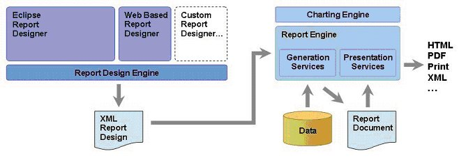

BIRT Project Description and Scope
The Eclipse Business Intelligence and Reporting Tools Project addresses a broad range of needs in the business intelligence and reporting space using the Eclipse platform.
The business intelligence and reporting space is focused on tools and capabilities that extract data from data sources, process that data, and present the processed information to the end users. The information may be needed to enable the users to perform their operational or analytical job functions, or it may be customer-centric information such as a transaction statement. The capabilities can range from application- and production-level reporting, through ad hoc user-driven query tools, to highly interactive multi-dimensional online analytical processing (OLAP) and data mining tools. While many business intelligence and reporting applications access operational data sources, it is often the case that developers provide specific data warehouses to support the business intelligence and reporting needs of an application. The tools in this space can include facilities to help build these data warehouses.
It should be noted that a given application often needs a range of complementary capabilities in this area to meet the needs of different users of the application. For example, consider components of an online order processing application: The individual order invoices will be printed for inclusion in the shipping box and the shipping clerk will need an online or printed shipping list (both production-level reports); while a product line manager may want to perform ad hoc queries to see which products generate the most returns; while the purchasing agent may use analytics to look for trends and improve stocking levels. Providing a range of coordinated and complementary capabilities under the Eclipse Business Intelligence and Reporting Tools Project is intended to ensure that the developed technology can effectively be used to meet this broad range of needs.
Initially, the Project will focus on leveraging the Eclipse platform to provide infrastructure and tools for the designing, deploying, generating and viewing of reports in an organization, including ad hoc query and reporting tools. While not an initial focus, the BIRT project scope includes complementing these reporting capabilities with Online Analytical Processing (OLAP) and Business Intelligence dashboard functionality. Over time, but not in the initial scope, the creation of additional projects is anticipated and encouraged to address additional aspects of business intelligence, such as Executive Information Systems (EIS), statistical analysis, modeling capabilities (what-if analysis), Data Mining Tools, Data Warehouse Modeling Tools, Extract Transform and Load (ETL) tools and Data Quality Tools.
The initial deliverable of the Eclipse Business Intelligence and Reporting Tools Project is to provide a robust platform that can be used to quickly and effectively create and deploy reports with any degree of complexity without having the developer create the data access, processing and formatting logic using Java code or components. In the majority of cases, the report developer will design a report within the Eclipse framework using a 100% visual design paradigm. However, in recognition of the fact that the variety of report layouts and complexity of data access is infinite, the project will also support extensive programmatic customization of the report generation processes, including programmatic creation of report designs.
Reports extract data from a data source or sources, perform manipulations and calculations on the data to answer business questions, and present the results as information in a formatted and convenient form for the business user to use. This information is then typically used for operational or decision support purposes within an organization. Reports vary dramatically in size, content and complexity and will include or combine characteristics such as:
This can be contrasted with data-driven JSP pages where the data manipulation and presentation needs are more transaction driven and do not include recurring reporting needs such as complex aggregation (performed outside of the database) and highly complex layouts.
For report development, the project broadly targets three classes of developer:
The project will address both the design time needs of report creation as well as the run-time requirements of report generation and deployment. A high-level architecture diagram is provided below. The project will adopt and support accepted open standards wherever feasible.
The Eclipse Business Intelligence and Reporting Project is divided into a number of sub-projects that reflect the initial focus on the reporting aspects of business intelligence and the high-level architecture of the project. These are discussed in the sub-project section below. As discussed above, the creation of additional sub-projects is anticipated and encouraged to address additional aspects of business intelligence.
Due to the wide variety of potential applications, it is recognized that BIRT cannot meet all the requirements of all applications. It is therefore a core design principle for the projects within BIRT to support a broad range of extension points within the tools and frameworks that allow developers to address additional needs. These extension points may be utilized for adding value in commercial products using BIRT, or may be developed and contributed into the Eclipse open source community.
For example, logging tools can use BIRT's data extension point to plug-in a data query user interface and access logic to read and process log files, use BIRT's report engine to present the information in the log, and extend BIRT's output/rendering adaptor to email or send a short message to a user with the report output in a format targeted for that device.
We expect the Business Intelligence and Reporting Tools Project to produce functional requirements that are more appropriately satisfied through the Eclipse Project or other Eclipse foundational projects. In such cases, the Business Intelligence and Reporting Tools Project PMC will coordinate the corresponding Project PMCs the design and implementation of the corresponding contribution.